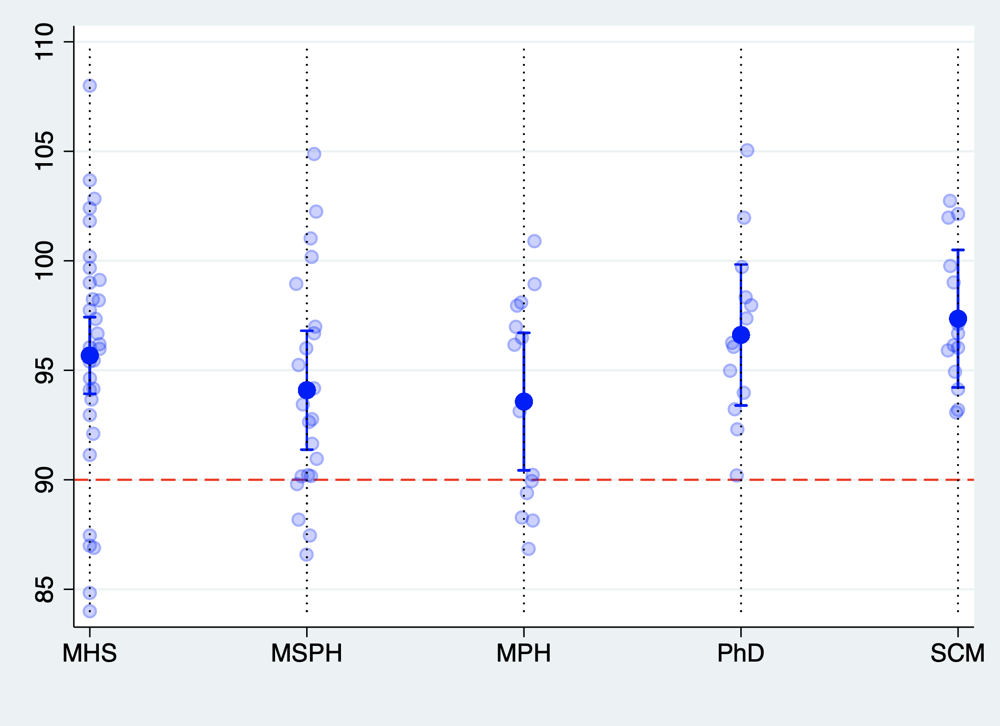

Grading Homeworks#
Statistical Distribution: 2021/2022#

Stata code to display 2021/2022 performance#
# Extrapoints for someone to render this in Python with interactive graphics!
#delimit ;
twoway
scatter
final degree ,
col(blue)
mcolor(%20)
jitter(3) ||
rcap
y1lb y1ub degree,
col(blue) ||
dot
y1m degree,
col(blue)
msize(2)
legend(off )
xlab(1 "MHS"
2 "MSPH"
3 "MPH"
4 "PhD"
5 "SCM")
yline(90, lcol(red) lp(dash))
xti(" ") ;
#delimit cr
Data structure on which the above code run#
What to expect??#
You’ll most likely get an A!
### Extra credit challenge (1.5 points max)
The following code introduces a random disturbance to the data in the screenshot above: `grade_34060071_general.dta`.
Use the outputed [data file](https://raw.githubusercontent.com/jhustata/book/main/grade_34060071_general.txt) to reproduce the fancy plot of 2021/2022 grades
```stata
#delimit cr
quietly {
if 1 {
set seed 340600
global filename grade_34060071_general
global vars final y1m y1lb y1ub
}
if 2 {
use ${filename}.dta, clear
}
if 3 {
g disturbance=rnormal(0,3)
}
if 4 {
forvalues i=1/4 {
local vars: di word("$vars",`i')
replace `vars' = `vars' + disturbance
}
}
if 5 {
drop disturbance
export delimited using "${filename}.txt", replace
}
}
```
Cell In[1], line 36
local vars: di word("$vars",`i')
^
SyntaxError: unterminated string literal (detected at line 36)